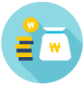
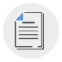
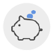

자주찾는 민원

새소식
추후납부 비대면 신청 방법
1. 추후납부(추납) 제도란? ○ 실직 등으로 연금보험료를 납부할 수 없었던 기간에 대하여 추후납부를 신청, 납부하여 연금수급권을 확보하거나 가입기간을 늘려 보다 많은 연금을 받을 수 있는 제도
2. 비대면 신청 방법 홈페이지 신청 방법(www.nps.or.kr : 공인인증서 로그인) ○ 경로 : 전자민원 -> 개인서비스 -> 신고/신청 -> 추납보험료 납부 신청 -> 추납 희망기간, 납부방법, 자동이체 여부 입력 -> 확인서 동의란 체크 -> 신청하기 -> 접수완료
새소식
발달장애인 재산관리지원서비스 시범사업 실시
국민연금공단은 (사) 한국자폐인사랑협회와 함께 금전 관리가 어려운 발달장애인을 돕고 부모 사후 대비 발달장애인의 경제적 자립 등 지역사회 자립을 지원하기 위해 발달장애인 재산관리지원서비스 시범사업을 추진중에 있으니 많은 참여 부탁드립니다.
1. 기간: 2022. 5월 ~ 2023년 12월(20개월) 2. 대상: 성인(만 19세) 발달장애인 120명 * 재가 발달장애인 40명, 시설거주 발달장애인 40명, 자립지원 시범사업 참여 발달장애인 40명
새소식
2022년도 2분기 우수 국민제안 선정 결과 안내
2022년 2분기 국민제안 심사결과, 아래 3건이 우수제안으로 선정되었음을 알려드립니다. 참여해 주신 모든 제안자님들께 진심으로 감사드리며, 선정되신 분께 축하의 말씀을 전합니다.
O 선정자 안내(3명)
1) 진OO
- 건설일용근로자의 국민연금 부과방식 개선
2) 정OO
- 4대보험 개별법에 있는 공통신고 서식 개정 시 기관별 연계
3) 유OO
- 4대보험 정보연계센터 증명서 표출사항 개선
새소식
국민연금공단 이사장 초빙 공고
전국민의 노후 소득보장과 복지증진의 중추기관인 국민연금공단에서 전문성과 글로벌 역량을 갖춘 최고경영자를 아래와 같이 모십니다.
○ 공모직위(임기) : 이사장(3년)
○ 주요 담당 업무 : 공단을 대표하고, 공단의 업무를 총괄
○ 접수기간 : 2022. 7. 28.(목) ~ 8. 10.(수) 18:00까지
국민연금이란
국민연금의 도입과 발전
국민연금의 특징
가입유형
사업장가입자
지역가입자
두루누리
연금급여
노령연금
장애연금
유족연금
장애인지원사업안내
기초수급자 근로능력평가
기초연금
국민연금 제도정보 등 공단이 하는 일 알아보기
여러 국가와 사회보장 협정을
맺어
염금혜택을 확대해
나가고 있습니다.
전세계의 다양한
연금제도를 이해하실 수
있습니다.
국민연금공단 콘텐츠 플랫폼 온에어
든든한 국민연금으로
나의 걱정은 가벼워지고
나의 행복이 늘어납니다
건강한 노후를 준히할 수 있도록
마음 건강을 돕는
읽을 거리 섹션
국민연금 새 소식과 유용한 정보를
받아보실 수 있습니다.